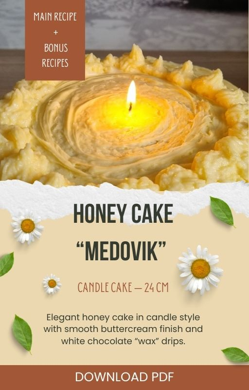
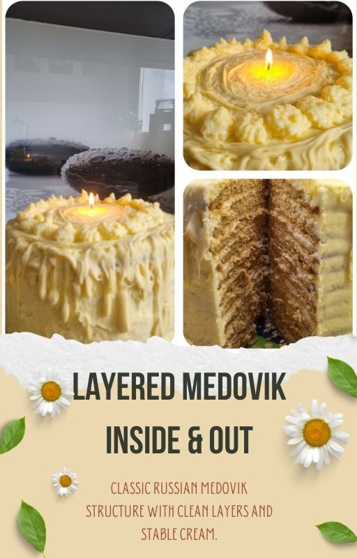

Graphic Design · Social Media Design
Medovik — Social Media Cards
A coordinated four-card visual series about honey cake, its layers, and decoration.
My role
Visual design, typography, and card layout.
Format
Four portrait social media cards.
Design direction
Warm honey tones, cake photography, and consistent typography.

Series Cover
The opening card introduces Medovik with a cake photograph, a clear headline, and a warm honey-coloured palette. The composition establishes the visual direction for the series.

Product Detail
A close-up of the thin cake layers puts the texture at the centre of the card. The same typography, colour palette, and footer treatment connect it to the cover.

Photo Layout
A three-image layout combines the finished cake with details of the layers. Consistent spacing and rounded image corners keep the collage organised.

Decoration & Series Consistency
The final card presents decoration examples within the same visual system. Repeated heading positions, warm backgrounds, and image treatments make the four cards work together as a series.